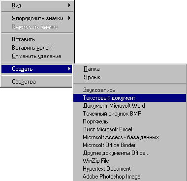

Создание
тестового документа
Перейдите в ту папку, внутри которой должна быть создан новый
текстовый документ
.
Щелкните на свободном месте правой кнопкой мыши.

Из контекстного меню выберите команду
Создать
и подкоманду
Текстовый документ
:
На экране появится новый текстовый документ с именем "Текстовый документ":
Введите нужное имя и нажмите ENTER
.